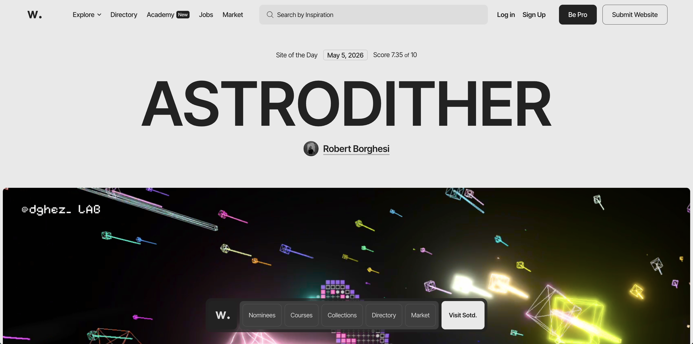

Visual Thinking Strategies Research
May 5, 2026

After I read the article I started thinking about how I look at images. I go through them fast. When I see a photo or a website I usually get a feeling from it. Then I move on. The article made me slow down and think about images. I realized that images can be like something you read. A small thing, like how something's cropped or what is not in the image can change what it means. This is similar to when I draw. I make choices about what to show and what to hide. I think about where I want people to look first.
For my example I looked at Awwwards. I think it is an example because it is like a collection of ways designers use images and interaction. When I look at Awwwards I am not just looking at websites. I am seeing how designers use things like scrolling and animation to guide people's attention. This is helpful for me because I am working on the Every Picture project. I want my images to feel like they are part of the story, not something on a page.
One good thing about Awwwards is that it gives me a lot of ideas for how websites with images can be more interesting to explore. One bad thing is that some sites seem to care more about showing off cool interactions than making it easy to understand what is going on. It reminds me that interactions should help the image and the story, not get in the way of them.